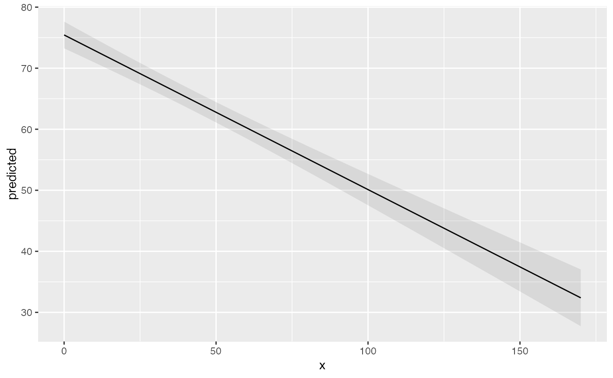
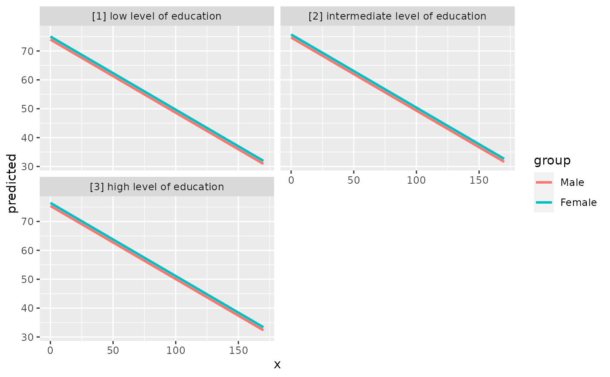
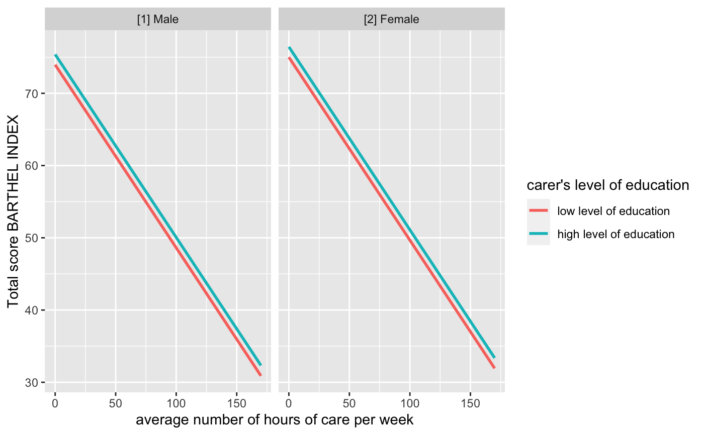
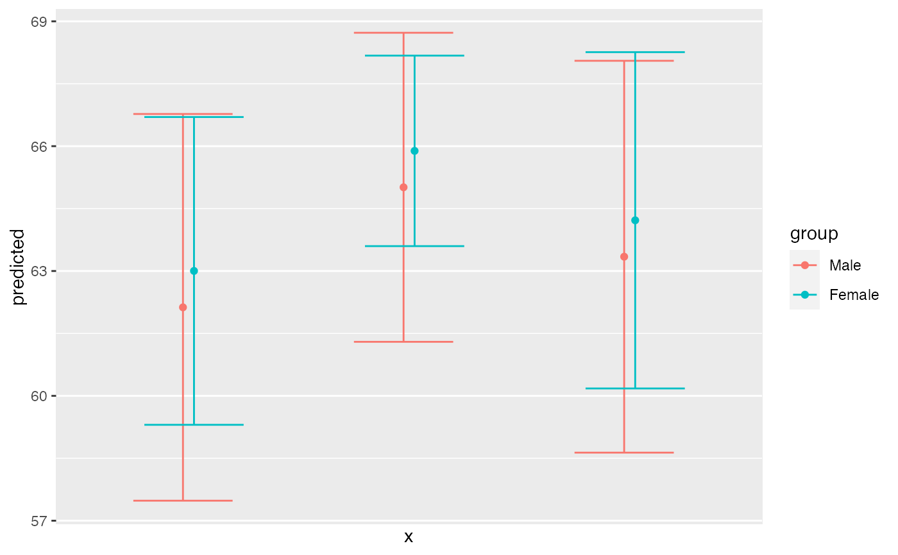
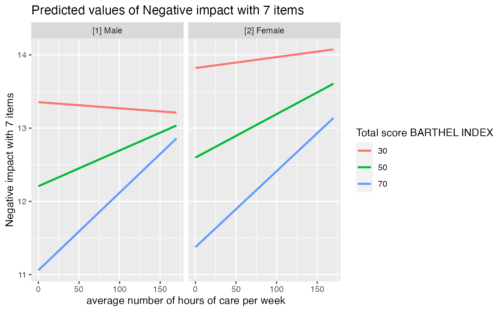

Marginal effects, adjusted predictions and estimated marginal means from regression models
Source:R/data_frame_methods.R, R/ggaverage.R, R/ggeffect.R, and 2 more
ggpredict.RdThe ggeffects package computes estimated marginal means (predicted values) for the response, at the margin of specific values or levels from certain model terms, i.e. it generates predictions by a model by holding the non-focal variables constant and varying the focal variable(s).
ggpredict() uses predict() for generating predictions, while
ggeffect() computes marginal effects by internally calling
effects::Effect() and ggemmeans() uses emmeans::emmeans().
ggaverage() uses marginaleffects::avg_predictions(). The result is
returned as consistent data frame.
Usage
# S3 method for ggeffects
as.data.frame(
x,
row.names = NULL,
optional = FALSE,
...,
stringsAsFactors = FALSE,
terms_to_colnames = FALSE
)
ggaverage(
model,
terms,
ci_level = 0.95,
typical = "mean",
condition = NULL,
back_transform = TRUE,
verbose = TRUE,
...
)
ggeffect(model, terms, ci_level = 0.95, verbose = TRUE, ci.lvl = ci_level, ...)
ggemmeans(
model,
terms,
ci_level = 0.95,
type = "fixed",
typical = "mean",
condition = NULL,
back_transform = TRUE,
interval = "confidence",
verbose = TRUE,
ci.lvl = ci_level,
back.transform = back_transform,
...
)
ggpredict(
model,
terms,
ci_level = 0.95,
type = "fixed",
typical = "mean",
condition = NULL,
back_transform = TRUE,
ppd = FALSE,
vcov_fun = NULL,
vcov_type = NULL,
vcov_args = NULL,
interval,
verbose = TRUE,
ci.lvl = ci_level,
back.transform = back_transform,
vcov.fun = vcov_fun,
vcov.type = vcov_type,
vcov.args = vcov_args,
...
)Arguments
- x
An object of class
ggeffects, as returned byggpredict(),ggeffect()orggemmeans().- row.names
NULLor a character vector giving the row names for the data frame. Missing values are not allowed.- optional
logical. If
TRUE, setting row names and converting column names (to syntactic names: seemake.names) is optional. Note that all of R's base packageas.data.frame()methods useoptionalonly for column names treatment, basically with the meaning ofdata.frame(*, check.names = !optional). See also themake.namesargument of thematrixmethod.- ...
For
ggpredict(), further arguments passed down topredict(); forggeffect(), further arguments passed down toeffects::Effect(); forggemmeans(), further arguments passed down toemmeans::emmeans(); and forggaverage(), further arguments passed down tomarginaleffects::avg_predictions(). Iftype = "simulate",...may also be used to set the number of simulation, e.g.nsim = 500.- stringsAsFactors
logical: should the character vector be converted to a factor?
- terms_to_colnames
Logical, if
TRUE, standardized column names (like"x","group"or"facet") are replaced by the variable names of the focal predictors specified interms.- model
A fitted model object, or a list of model objects. Any model that supports common methods like
predict(),family()ormodel.frame()should work. Forggeffect(), any model that is supported by effects should work, and forggemmeans(), all models supported by emmeans should work.- terms
Names of those terms from
model, for which predictions should be displayed (so called focal terms). Can be:A character vector, specifying the names of the focal terms. This is the preferred and probably most flexible way to specify focal terms, e.g.
terms = "x [40:60]", to calculate predictions for the values 40 to 60.A list, where each element is a named vector, specifying the focal terms and their values. This is the "classical" R way to specify focal terms, e.g.
list(x = 40:60).A formula, e.g.
terms = ~ x + z, which is internally converted to a character vector. This is probably the least flexible way, as you cannot specify representative values for the focal terms.A data frame representig a "data grid" or "reference grid". Predictions are then made for all combinations of the variables in the data frame.
At least one term is required to calculate effects for certain terms, maximum length is four terms, where the second to fourth term indicate the groups, i.e. predictions of first term are grouped at meaningful values or levels of the remaining terms (see
values_at()). Iftermsis missing orNULL, adjusted predictions for each model term are calculated (i.e. each model term is used as single focal term). It is also possible to define specific values for focal terms, at which adjusted predictions should be calculated (see 'Details'). All remaining covariates that are not specified intermsare held constant (see 'Details'). See also argumentsconditionandtypical.- ci_level
Numeric, the level of the confidence intervals. For
ggpredict(), useci_level = NA, if confidence intervals should not be calculated (for instance, due to computation time). Typically, confidence intervals based on the standard errors as returned by thepredict()function are returned, assuming normal distribution (i.e.+/- 1.96 * SE). See introduction of this vignette for more details.- typical
Character vector, naming the function to be applied to the covariates (non-focal terms) over which the effect is "averaged". The default is
"mean". Can be"mean", "weighted.mean","median","mode"or"zero", which call the corresponding R functions (except"mode", which calls an internal function to compute the most common value);"zero"simply returns 0. By default, if the covariate is a factor, only"mode"is applicable; for all other values (including the default,"mean") the reference level is returned. For character vectors, only the mode is returned. You can use a named vector to apply different functions to integer, numeric and categorical covariates, e.g.typical = c(numeric = "median", factor = "mode"). Iftypicalis"weighted.mean", weights from the model are used. If no weights are available, the function falls back to"mean".- condition
Named character vector, which indicates covariates that should be held constant at specific values. Unlike
typical, which applies a function to the covariates to determine the value that is used to hold these covariates constant,conditioncan be used to define exact values, for instancecondition = c(covariate1 = 20, covariate2 = 5). See 'Examples'.- back_transform
Logical, if
TRUE(the default), predicted values for log- or log-log transformed responses will be back-transformed to original response-scale.- verbose
Toggle messages or warnings.
- ci.lvl, vcov.fun, vcov.type, vcov.args, back.transform
Deprecated arguments. Please use
ci_level,vcov_fun,vcov_type,vcov_argsandback_transforminstead.- type
Character, indicating whether predictions should be conditioned on specific model components or not. Consequently, most options only apply for survival models, mixed effects models and/or models with zero-inflation (and their Bayesian counter-parts); only exeption is
type = "simulate", which is available for some other model classes as well (which respond tosimulate()). Note: Forbrmsfit-models with zero-inflation component, there is notype = "zero_inflated"nortype = "zi_random"; predicted values forMixMod-models from GLMMadaptive with zero-inflation component always condition on the zero-inflation part of the model (see 'Details')."fixed"(or"fe"or"count")Predicted values are conditioned on the fixed effects or conditional model only (for mixed models: predicted values are on the population-level and confidence intervals are returned, i.e.
re.form = NAwhen callingpredict()). For instance, for models fitted withzeroinflfrom pscl, this would return the predicted mean from the count component (without zero-inflation). For models with zero-inflation component, this type callspredict(..., type = "link")(however, predicted values are back-transformed to the response scale)."fixed_ppd"Only applies to
ggpredict(), and only for Bayesian models of classstanregorbrmsfit. Computes the posterior predictive distribution. It is the same as settingtype = "fixed"in combination withppd = TRUE."random"(or"re")This only applies to mixed models, and
type = "random"does not condition on the zero-inflation component of the model.type = "random"still returns population-level predictions, however, conditioned on random effects and considering individual level predictions, i.e.re.form = NULLwhen callingpredict(). This may affect the returned predicted values, depending on whetherREML = TRUEorREML = FALSEwas used for model fitting. Furthermore, unliketype = "fixed", intervals also consider the uncertainty in the variance parameters (the mean random effect variance, see Johnson et al. 2014 for details) and hence can be considered as prediction intervals. For models with zero-inflation component, this type callspredict(..., type = "link")(however, predicted values are back-transformed to the response scale).To get predicted values for each level of the random effects groups, add the name of the related random effect term to the
terms-argument (for more details, see this vignette)."random_ppd"Only applies to
ggpredict(), and only for Bayesian models of classstanregorbrmsfit. Computes the posterior predictive distribution. It is the same as settingtype = "random"in combination withppd = TRUE."zero_inflated"(or"fe.zi"or"zi")Predicted values are conditioned on the fixed effects and the zero-inflation component. For instance, for models fitted with
zeroinflfrom pscl, this would return the predicted response (mu*(1-p)) and for glmmTMB, this would return the expected valuemu*(1-p)without conditioning on random effects (i.e. random effect variances are not taken into account for the confidence intervals). For models with zero-inflation component, this type callspredict(..., type = "response"). See 'Details'."zi_random"(or"re.zi"or"zero_inflated_random")Predicted values are conditioned on the zero-inflation component and take the random effects uncertainty into account. For models fitted with
glmmTMB(),hurdle()orzeroinfl(), this would return the expected valuemu*(1-p). For glmmTMB, prediction intervals also consider the uncertainty in the random effects variances. This type callspredict(..., type = "response"). See 'Details'."zi_prob"(or"zi.prob")Predicted zero-inflation probability. For glmmTMB models with zero-inflation component, this type calls
predict(..., type = "zlink"); models from pscl callpredict(..., type = "zero")and for GLMMadaptive,predict(..., type = "zero_part")is called."simulate"(or"sim")Predicted values and confidence resp. prediction intervals are based on simulations, i.e. calls to
simulate(). This type of prediction takes all model uncertainty into account, including random effects variances. Currently supported models are objects of classlm,glm,glmmTMB,wbm,MixModandmerMod. See...for details on number of simulations."survival"and"cumulative_hazard"(or"surv"and"cumhaz")Applies only to
coxph-objects from the survial-package and calculates the survival probability or the cumulative hazard of an event.
- interval
Type of interval calculation, can either be
"confidence"(default) or"prediction". May be abbreviated. Unlike confidence intervals, prediction intervals include the residual variance (sigma^2) to account for the uncertainty of predicted values. For mixed models,interval = "prediction"is the default fortype = "random". Whentype = "fixed", the default isinterval = "confidence". Note that prediction intervals are not available for all models, but only for models that work withinsight::get_sigma().- ppd
Logical, if
TRUE, predictions for Stan-models are based on the posterior predictive distributionrstantools::posterior_predict(). IfFALSE(the default), predictions are based on posterior draws of the linear predictorrstantools::posterior_linpred().- vcov_fun
Variance-covariance matrix used to compute uncertainty estimates (e.g., for confidence intervals based on robust standard errors). This argument accepts a covariance matrix, a function which returns a covariance matrix, or a string which identifies the function to be used to compute the covariance matrix.
A (variance-covariance) matrix
A function which returns a covariance matrix (e.g.,
stats::vcov())A string which indicates the name of the
vcov*()-function from the sandwich or clubSandwich packages, e.g.vcov_fun = "vcovCL", which is used to compute (cluster) robust standard errors for predictions. IfNULL, standard errors (and confidence intervals) for predictions are based on the standard errors as returned by thepredict()-function. Note that probably not all model objects that work withggpredict()are also supported by the sandwich or clubSandwich packages.
See details in this vignette.
- vcov_type
Character vector, specifying the estimation type for the robust covariance matrix estimation (see
?sandwich::vcovHCor?clubSandwich::vcovCRfor details). Only used whenvcov_funis a character string indicating on of the function from those packages.- vcov_args
List of named vectors, used as additional arguments that are passed down to
vcov_fun.
Value
A data frame (with ggeffects class attribute) with consistent data columns:
"x": the values of the first term interms, used as x-position in plots."predicted": the predicted values of the response, used as y-position in plots."std.error": the standard error of the predictions. Note that the standard errors are always on the link-scale, and not back-transformed for non-Gaussian models!"conf.low": the lower bound of the confidence interval for the predicted values."conf.high": the upper bound of the confidence interval for the predicted values."group": the grouping level from the second term interms, used as grouping-aesthetics in plots."facet": the grouping level from the third term interms, used to indicate facets in plots.The estimated marginal means (or predicted values) are always on the response scale!
For proportional odds logistic regression (see
?MASS::polr) resp. cumulative link models (e.g., see?ordinal::clm), an additional column"response.level"is returned, which indicates the grouping of predictions based on the level of the model's response.Note that for convenience reasons, the columns for the intervals are always named
"conf.low"and"conf.high", even though for Bayesian models credible or highest posterior density intervals are returned.There is an
as.data.frame()method for objects of classggeffects, which has anterms_to_colnamesargument, to use the term names as column names instead of the standardized names"x"etc.
Details
Supported Models
A list of supported models can be found at the package website.
Support for models varies by function, i.e. although ggpredict(),
ggemmeans() and ggeffect() support most models, some models
are only supported exclusively by one of the three functions.
Difference between ggpredict() and ggeffect() or ggemmeans()
ggpredict() calls predict(), while ggeffect() calls effects::Effect()
and ggemmeans() calls emmeans::emmeans() to compute predicted values.
Thus, effects returned by ggpredict() can be described as conditional effects
(i.e. these are conditioned on certain (reference) levels of factors), while
ggemmeans() and ggeffect() return marginal means, since
the effects are "marginalized" (or "averaged") over the levels of factors
(or values of character vectors). Therefore, ggpredict() and ggeffect()
resp. ggemmeans() differ in how factors and character vectors are held
constant: ggpredict() uses the reference level (or "lowest" value in case
of character vectors), while ggeffect() and ggemmeans() compute a
kind of "average" value, which represents the proportions of each factor's
category. Use condition to set a specific level for factors in
ggemmeans(), so factors are not averaged over their categories,
but held constant at a given level.
Difference between ggemmeans() and ggaverage()
Estimated marginal means, as computed by ggemmeans() or ggeffect(), are a
special case of predictions, made on a perfectly balanced grid of categorical
predictors, with numeric predictors held at their means, and marginalized with
respect to some focal variables. ggaverage() calculates predicted values
for each observation in the data multiple times, each time fixing all values
or levels of the focal terms to and then takes the average of these predicted
values (aggregated/grouped by the focal terms). There is no rule of thumb
which approach is better; it depends on the characteristics of the sample and
the population to which should be generalized. Consulting the
marginaleffects-website might help to decide
which approach is more appropriate. The most apparent difference is how
non-focal categorical predictors affect the predicted values. ggpredict()
will condition on a certain level of the non-focal factors (usually, the reference
level), ggemmeans() will "average" over the levels of non-focal factors,
while ggaverage() will average over the observations in your sample. See also
this vignette
for details and examples.
Marginal Effects and Adjusted Predictions at Specific Values
Meaningful values of focal terms can be specified via the terms argument.
Specifying meaningful or representative values as string pattern is the
preferred way in the ggeffects package. However, it is also possible to
use a list() for the focal terms if prefer the "classical" R way, which is
described in this vignette.
Indicating levels in square brackets allows for selecting only certain
groups or values resp. value ranges. The term name and the start of the
levels in brackets must be separated by a whitespace character, e.g.
terms = c("age", "education [1,3]"). Numeric ranges, separated with colon,
are also allowed: terms = c("education", "age [30:60]"). The stepsize for
ranges can be adjusted using by, e.g. terms = "age [30:60 by=5]".
The terms argument also supports the same shortcuts as the values argument
in values_at(). So terms = "age [meansd]" would return predictions for
the values one standard deviation below the mean age, the mean age and one SD
above the mean age. terms = "age [quart2]" would calculate predictions at
the value of the lower, median and upper quartile of age.
Furthermore, it is possible to specify a function name. Values for predictions
will then be transformed, e.g. terms = "income [exp]". This is useful when
model predictors were transformed for fitting the model and should be
back-transformed to the original scale for predictions. It is also possible
to define own functions (see
this vignette).
Instead of a function, it is also possible to define the name of a variable
with specific values, e.g. to define a vector v = c(1000, 2000, 3000) and
then use terms = "income [v]".
You can take a random sample of any size with sample=n, e.g
terms = "income [sample=8]", which will sample eight values from
all possible values of the variable income. This option is especially
useful for plotting predictions at certain levels of random effects
group levels, where the group factor has many levels that can be completely
plotted. For more details, see
this vignette.
Finally, numeric vectors for which no specific values are given, a "pretty range"
is calculated (see pretty_range()), to avoid memory allocation problems
for vectors with many unique values. If a numeric vector is specified as
second or third term (i.e. if this vector represents a grouping structure),
representative values (see values_at()) are chosen (unless other values
are specified). If all values for a numeric vector should be used to compute
predictions, you may use e.g. terms = "age [all]". See also package vignettes.
To create a pretty range that should be smaller or larger than the default
range (i.e. if no specific values would be given), use the n tag, e.g.
terms="age [n=5]" or terms="age [n=12]". Larger values for n return a
larger range of predicted values.
Holding covariates at constant values
For ggpredict(), a data grid is constructed, roughly comparable to
expand.grid() on all unique combinations of model.frame(model)[, terms].
This data grid (see data_grid()) as newdata argument for predict().
In this case, all remaining covariates that are not specified in terms are
held constant: Numeric values are set to the mean (unless changed with
the condition or typical argument), integer values are set to their
median, factors are set to their reference level (may also be changed with
condition) and character vectors to their mode (most common element).
ggeffect() and ggemmeans(), by default, set remaining numeric covariates
to their mean value, while for factors, a kind of "average" value, which
represents the proportions of each factor's category, is used. The same
applies to character vectors: ggemmeans() averages over the distribution
of unique values in a character vector, similar to how factors are treated.
Thus, non-focal categorical terms in ggemmeans() and ggeffect() are
conditioned on "weighted averages" of their levels. For ggemmeans(), use
condition to set a specific level for factors so that these are not
averaged over their categories, but held constant at the given level.
Finally, ggaverage() calculates average predicted values, which are
averaged over the full sample and aggregated by (representative values of)
the focal terms. For further details, see
this vignette.
Bayesian Regression Models
ggpredict() also works with Stan-models from the rstanarm or
brms-packages. The predicted values are the median value of all drawn
posterior samples. The confidence intervals for Stan-models are Bayesian
predictive intervals. By default (i.e. ppd = FALSE), the predictions are
based on rstantools::posterior_linpred() and hence have some limitations:
the uncertainty of the error term is not taken into account. The recommendation
is to use the posterior predictive distribution (rstantools::posterior_predict()).
Zero-Inflated and Zero-Inflated Mixed Models with brms
Models of class brmsfit always condition on the zero-inflation component,
if the model has such a component. Hence, there is no type = "zero_inflated"
nor type = "zi_random" for brmsfit-models, because predictions are based
on draws of the posterior distribution, which already account for the
zero-inflation part of the model.
Zero-Inflated and Zero-Inflated Mixed Models with glmmTMB
If model is of class glmmTMB, hurdle, zeroinfl or zerotrunc,
simulations from a multivariate normal distribution (see ?MASS::mvrnorm)
are drawn to calculate mu*(1-p). Confidence intervals are then based on
quantiles of these results. For type = "zi_random", prediction intervals
also take the uncertainty in the random-effect paramters into account (see
also Brooks et al. 2017, pp.391-392 for details).
An alternative for models fitted with glmmTMB that take all model
uncertainties into account are simulations based on simulate(), which
is used when type = "simulate" (see Brooks et al. 2017, pp.392-393 for
details).
MixMod-models from GLMMadaptive
Predicted values for the fixed effects component (type = "fixed" or
type = "zero_inflated") are based on predict(..., type = "mean_subject"),
while predicted values for random effects components (type = "random" or
type = "zi_random") are calculated with predict(..., type = "subject_specific")
(see ?GLMMadaptive::predict.MixMod for details). The latter option
requires the response variable to be defined in the newdata-argument
of predict(), which will be set to its typical value (see
values_at()).
Note
Multinomial Models
polr, clm models, or more generally speaking, models with ordinal or
multinominal outcomes, have an additional column response.level, which
indicates with which level of the response variable the predicted values are
associated.
Printing Results
The print() method gives a clean output (especially for predictions by
groups), and indicates at which values covariates were held constant.
Furthermore, the print() method has the arguments digits and n to
control number of decimals and lines to be printed.
Limitations
The support for some models, for example from package MCMCglmm, is rather experimental and may fail for certain models. If you encounter any errors, please file an issue at Github.
References
Brooks ME, Kristensen K, Benthem KJ van, Magnusson A, Berg CW, Nielsen A, et al. glmmTMB Balances Speed and Flexibility Among Packages for Zero-inflated Generalized Linear Mixed Modeling. The R Journal. 2017;9: 378-400.
Johnson PC, O'Hara RB. 2014. Extension of Nakagawa & Schielzeth's R2GLMM to random slopes models. Methods Ecol Evol, 5: 944-946.
Examples
library(sjlabelled)
#>
#> Attaching package: ‘sjlabelled’
#> The following object is masked from ‘package:ggplot2’:
#>
#> as_label
#> The following objects are masked from ‘package:datawizard’:
#>
#> to_factor, to_numeric
data(efc)
fit <- lm(barthtot ~ c12hour + neg_c_7 + c161sex + c172code, data = efc)
ggpredict(fit, terms = "c12hour")
#> # Predicted values of Total score BARTHEL INDEX
#>
#> c12hour | Predicted | 95% CI
#> ----------------------------------
#> 0 | 75.44 | 73.25, 77.63
#> 20 | 70.38 | 68.56, 72.19
#> 45 | 64.05 | 62.39, 65.70
#> 65 | 58.98 | 57.15, 60.80
#> 85 | 53.91 | 51.71, 56.12
#> 105 | 48.85 | 46.14, 51.55
#> 125 | 43.78 | 40.51, 47.05
#> 170 | 32.38 | 27.73, 37.04
#>
#> Adjusted for:
#> * neg_c_7 = 11.84
#> * c161sex = 1.76
#> * c172code = 1.97
#>
#> Not all rows are shown in the output. Use `print(..., n = Inf)` to show
#> all rows.
ggpredict(fit, terms = c("c12hour", "c172code"))
#> # Predicted values of Total score BARTHEL INDEX
#>
#> c172code: low level of education
#>
#> c12hour | Predicted | 95% CI
#> ----------------------------------
#> 0 | 76.18 | 72.81, 79.55
#> 30 | 68.58 | 65.41, 71.76
#> 55 | 62.25 | 59.00, 65.50
#> 85 | 54.65 | 51.03, 58.27
#> 115 | 47.05 | 42.85, 51.26
#> 170 | 33.12 | 27.50, 38.74
#>
#> c172code: intermediate level of education
#>
#> c12hour | Predicted | 95% CI
#> ----------------------------------
#> 0 | 75.46 | 73.28, 77.65
#> 30 | 67.87 | 66.16, 69.57
#> 55 | 61.53 | 59.82, 63.25
#> 85 | 53.93 | 51.72, 56.14
#> 115 | 46.34 | 43.35, 49.32
#> 170 | 32.40 | 27.74, 37.07
#>
#> c172code: high level of education
#>
#> c12hour | Predicted | 95% CI
#> ----------------------------------
#> 0 | 74.75 | 71.26, 78.23
#> 30 | 67.15 | 64.03, 70.26
#> 55 | 60.81 | 57.77, 63.86
#> 85 | 53.22 | 49.95, 56.48
#> 115 | 45.62 | 41.86, 49.37
#> 170 | 31.69 | 26.59, 36.78
#>
#> Adjusted for:
#> * neg_c_7 = 11.84
#> * c161sex = 1.76
#>
#> Not all rows are shown in the output. Use `print(..., n = Inf)` to show
#> all rows.
ggpredict(fit, terms = c("c12hour", "c172code", "c161sex"))
#> # Predicted values of Total score BARTHEL INDEX
#>
#> c172code: low level of education
#> c161sex: [1] Male
#>
#> c12hour | Predicted | 95% CI
#> ----------------------------------
#> 0 | 75.39 | 71.03, 79.75
#> 45 | 63.99 | 59.72, 68.26
#> 85 | 53.86 | 49.22, 58.50
#> 170 | 32.33 | 25.94, 38.72
#>
#> c172code: low level of education
#> c161sex: [2] Female
#>
#> c12hour | Predicted | 95% CI
#> ----------------------------------
#> 0 | 76.43 | 72.88, 79.98
#> 45 | 65.03 | 61.67, 68.39
#> 85 | 54.90 | 51.15, 58.65
#> 170 | 33.37 | 27.69, 39.05
#>
#> c172code: intermediate level of education
#> c161sex: [1] Male
#>
#> c12hour | Predicted | 95% CI
#> ----------------------------------
#> 0 | 74.67 | 71.05, 78.29
#> 45 | 63.27 | 59.88, 66.67
#> 85 | 53.14 | 49.39, 56.89
#> 170 | 31.61 | 25.97, 37.25
#>
#> c172code: intermediate level of education
#> c161sex: [2] Female
#>
#> c12hour | Predicted | 95% CI
#> ----------------------------------
#> 0 | 75.71 | 73.31, 78.12
#> 45 | 64.32 | 62.41, 66.22
#> 85 | 54.18 | 51.81, 56.56
#> 170 | 32.65 | 27.94, 37.37
#>
#> c172code: high level of education
#> c161sex: [1] Male
#>
#> c12hour | Predicted | 95% CI
#> ----------------------------------
#> 0 | 73.95 | 69.35, 78.56
#> 45 | 62.56 | 58.22, 66.89
#> 85 | 52.42 | 47.89, 56.96
#> 170 | 30.89 | 24.84, 36.95
#>
#> c172code: high level of education
#> c161sex: [2] Female
#>
#> c12hour | Predicted | 95% CI
#> ----------------------------------
#> 0 | 75.00 | 71.40, 78.59
#> 45 | 63.60 | 60.45, 66.74
#> 85 | 53.46 | 50.12, 56.80
#> 170 | 31.93 | 26.82, 37.05
#>
#> Adjusted for:
#> * neg_c_7 = 11.84
#>
#> Not all rows are shown in the output. Use `print(..., n = Inf)` to show
#> all rows.
# specified as formula
ggpredict(fit, terms = ~ c12hour + c172code + c161sex)
#> # Predicted values of Total score BARTHEL INDEX
#>
#> c172code: low level of education
#> c161sex: [1] Male
#>
#> c12hour | Predicted | 95% CI
#> ----------------------------------
#> 0 | 75.39 | 71.03, 79.75
#> 45 | 63.99 | 59.72, 68.26
#> 85 | 53.86 | 49.22, 58.50
#> 170 | 32.33 | 25.94, 38.72
#>
#> c172code: low level of education
#> c161sex: [2] Female
#>
#> c12hour | Predicted | 95% CI
#> ----------------------------------
#> 0 | 76.43 | 72.88, 79.98
#> 45 | 65.03 | 61.67, 68.39
#> 85 | 54.90 | 51.15, 58.65
#> 170 | 33.37 | 27.69, 39.05
#>
#> c172code: intermediate level of education
#> c161sex: [1] Male
#>
#> c12hour | Predicted | 95% CI
#> ----------------------------------
#> 0 | 74.67 | 71.05, 78.29
#> 45 | 63.27 | 59.88, 66.67
#> 85 | 53.14 | 49.39, 56.89
#> 170 | 31.61 | 25.97, 37.25
#>
#> c172code: intermediate level of education
#> c161sex: [2] Female
#>
#> c12hour | Predicted | 95% CI
#> ----------------------------------
#> 0 | 75.71 | 73.31, 78.12
#> 45 | 64.32 | 62.41, 66.22
#> 85 | 54.18 | 51.81, 56.56
#> 170 | 32.65 | 27.94, 37.37
#>
#> c172code: high level of education
#> c161sex: [1] Male
#>
#> c12hour | Predicted | 95% CI
#> ----------------------------------
#> 0 | 73.95 | 69.35, 78.56
#> 45 | 62.56 | 58.22, 66.89
#> 85 | 52.42 | 47.89, 56.96
#> 170 | 30.89 | 24.84, 36.95
#>
#> c172code: high level of education
#> c161sex: [2] Female
#>
#> c12hour | Predicted | 95% CI
#> ----------------------------------
#> 0 | 75.00 | 71.40, 78.59
#> 45 | 63.60 | 60.45, 66.74
#> 85 | 53.46 | 50.12, 56.80
#> 170 | 31.93 | 26.82, 37.05
#>
#> Adjusted for:
#> * neg_c_7 = 11.84
#>
#> Not all rows are shown in the output. Use `print(..., n = Inf)` to show
#> all rows.
# only range of 40 to 60 for variable 'c12hour'
ggpredict(fit, terms = "c12hour [40:60]")
#> # Predicted values of Total score BARTHEL INDEX
#>
#> c12hour | Predicted | 95% CI
#> ----------------------------------
#> 40 | 65.31 | 63.66, 66.96
#> 43 | 64.55 | 62.90, 66.20
#> 45 | 64.05 | 62.39, 65.70
#> 47 | 63.54 | 61.88, 65.20
#> 50 | 62.78 | 61.11, 64.45
#> 53 | 62.02 | 60.33, 63.71
#> 55 | 61.51 | 59.80, 63.22
#> 60 | 60.25 | 58.49, 62.01
#>
#> Adjusted for:
#> * neg_c_7 = 11.84
#> * c161sex = 1.76
#> * c172code = 1.97
#>
#> Not all rows are shown in the output. Use `print(..., n = Inf)` to show
#> all rows.
# terms as named list
ggpredict(fit, terms = list(c12hour = 40:60))
#> # Predicted values of Total score BARTHEL INDEX
#>
#> c12hour | Predicted | 95% CI
#> ----------------------------------
#> 40 | 65.31 | 63.66, 66.96
#> 43 | 64.55 | 62.90, 66.20
#> 45 | 64.05 | 62.39, 65.70
#> 47 | 63.54 | 61.88, 65.20
#> 50 | 62.78 | 61.11, 64.45
#> 53 | 62.02 | 60.33, 63.71
#> 55 | 61.51 | 59.80, 63.22
#> 60 | 60.25 | 58.49, 62.01
#>
#> Adjusted for:
#> * neg_c_7 = 11.84
#> * c161sex = 1.76
#> * c172code = 1.97
#>
#> Not all rows are shown in the output. Use `print(..., n = Inf)` to show
#> all rows.
# covariate "neg_c_7" is held constant at a value of 11.84 (its mean value).
# To use a different value, use "condition"
ggpredict(fit, terms = "c12hour [40:60]", condition = c(neg_c_7 = 20))
#> # Predicted values of Total score BARTHEL INDEX
#>
#> c12hour | Predicted | 95% CI
#> ----------------------------------
#> 40 | 46.56 | 42.58, 50.55
#> 43 | 45.80 | 41.84, 49.76
#> 45 | 45.30 | 41.35, 49.24
#> 47 | 44.79 | 40.86, 48.72
#> 50 | 44.03 | 40.11, 47.94
#> 53 | 43.27 | 39.37, 47.17
#> 55 | 42.76 | 38.87, 46.65
#> 60 | 41.50 | 37.62, 45.37
#>
#> Adjusted for:
#> * c161sex = 1.76
#> * c172code = 1.97
#>
#> Not all rows are shown in the output. Use `print(..., n = Inf)` to show
#> all rows.
# to plot ggeffects-objects, you can use the 'plot()'-function.
# the following examples show how to build your ggplot by hand.
# \donttest{
# plot predicted values, remaining covariates held constant
library(ggplot2)
mydf <- ggpredict(fit, terms = "c12hour")
ggplot(mydf, aes(x, predicted)) +
geom_line() +
geom_ribbon(aes(ymin = conf.low, ymax = conf.high), alpha = 0.1)

# three variables, so we can use facets and groups
mydf <- ggpredict(fit, terms = c("c12hour", "c161sex", "c172code"))
ggplot(mydf, aes(x = x, y = predicted, colour = group)) +
stat_smooth(method = "lm", se = FALSE) +
facet_wrap(~facet, ncol = 2)
#> `geom_smooth()` using formula = 'y ~ x'

# select specific levels for grouping terms
mydf <- ggpredict(fit, terms = c("c12hour", "c172code [1,3]", "c161sex"))
ggplot(mydf, aes(x = x, y = predicted, colour = group)) +
stat_smooth(method = "lm", se = FALSE) +
facet_wrap(~facet) +
labs(
y = get_y_title(mydf),
x = get_x_title(mydf),
colour = get_legend_title(mydf)
)
#> `geom_smooth()` using formula = 'y ~ x'

# level indication also works for factors with non-numeric levels
# and in combination with numeric levels for other variables
data(efc)
efc$c172code <- sjlabelled::as_label(efc$c172code)
fit <- lm(barthtot ~ c12hour + neg_c_7 + c161sex + c172code, data = efc)
ggpredict(fit, terms = c("c12hour",
"c172code [low level of education, high level of education]",
"c161sex [1]"))
#> # Predicted values of Total score BARTHEL INDEX
#>
#> c172code: low level of education
#>
#> c12hour | Predicted | 95% CI
#> ----------------------------------
#> 0 | 74.03 | 69.23, 78.83
#> 30 | 66.43 | 61.74, 71.13
#> 55 | 60.10 | 55.33, 64.88
#> 85 | 52.51 | 47.45, 57.56
#> 115 | 44.91 | 39.39, 50.43
#> 170 | 30.98 | 24.28, 37.68
#>
#> c172code: high level of education
#>
#> c12hour | Predicted | 95% CI
#> ----------------------------------
#> 0 | 72.81 | 67.90, 77.72
#> 30 | 65.22 | 60.53, 69.90
#> 55 | 58.89 | 54.22, 63.55
#> 85 | 51.29 | 46.45, 56.13
#> 115 | 43.69 | 38.48, 48.90
#> 170 | 29.76 | 23.48, 36.05
#>
#> Adjusted for:
#> * neg_c_7 = 11.84
#>
#> Not all rows are shown in the output. Use `print(..., n = Inf)` to show
#> all rows.
# when "terms" is a named list
ggpredict(fit, terms = list(
c12hour = seq(0, 170, 30),
c172code = c("low level of education", "high level of education"),
c161sex = 1)
)
#> # Predicted values of Total score BARTHEL INDEX
#>
#> c172code: low level of education
#>
#> c12hour | Predicted | 95% CI
#> ----------------------------------
#> 0 | 74.03 | 69.23, 78.83
#> 30 | 66.43 | 61.74, 71.13
#> 60 | 58.84 | 54.03, 63.64
#> 90 | 51.24 | 46.11, 56.36
#> 120 | 43.64 | 38.03, 49.26
#> 150 | 36.05 | 29.82, 42.28
#>
#> c172code: high level of education
#>
#> c12hour | Predicted | 95% CI
#> ----------------------------------
#> 0 | 72.81 | 67.90, 77.72
#> 30 | 65.22 | 60.53, 69.90
#> 60 | 57.62 | 52.94, 62.29
#> 90 | 50.02 | 45.14, 54.91
#> 120 | 42.43 | 37.14, 47.72
#> 150 | 34.83 | 28.98, 40.67
#>
#> Adjusted for:
#> * neg_c_7 = 11.84
# use categorical value on x-axis, use axis-labels, add error bars
dat <- ggpredict(fit, terms = c("c172code", "c161sex"))
ggplot(dat, aes(x, predicted, colour = group)) +
geom_point(position = position_dodge(0.1)) +
geom_errorbar(
aes(ymin = conf.low, ymax = conf.high),
position = position_dodge(0.1)
) +
scale_x_discrete(breaks = 1:3, labels = get_x_labels(dat))

# 3-way-interaction with 2 continuous variables
data(efc)
# make categorical
efc$c161sex <- as_factor(efc$c161sex)
fit <- lm(neg_c_7 ~ c12hour * barthtot * c161sex, data = efc)
# select only levels 30, 50 and 70 from continuous variable Barthel-Index
dat <- ggpredict(fit, terms = c("c12hour", "barthtot [30,50,70]", "c161sex"))
ggplot(dat, aes(x = x, y = predicted, colour = group)) +
stat_smooth(method = "lm", se = FALSE, fullrange = TRUE) +
facet_wrap(~facet) +
labs(
colour = get_legend_title(dat),
x = get_x_title(dat),
y = get_y_title(dat),
title = get_title(dat)
)
#> `geom_smooth()` using formula = 'y ~ x'

# or with ggeffects' plot-method
plot(dat, ci = FALSE)

# }
# predictions for polynomial terms
data(efc)
fit <- glm(
tot_sc_e ~ c12hour + e42dep + e17age + I(e17age^2) + I(e17age^3),
data = efc,
family = poisson()
)
ggeffect(fit, terms = "e17age")
#> # Predicted counts of Services for elderly
#>
#> e17age | Predicted | 95% CI
#> -------------------------------
#> 64 | 1.37 | 1.04, 1.80
#> 70 | 0.94 | 0.84, 1.06
#> 74 | 0.90 | 0.80, 1.01
#> 78 | 0.94 | 0.85, 1.04
#> 84 | 1.04 | 0.94, 1.15
#> 90 | 1.01 | 0.88, 1.15
#> 94 | 0.82 | 0.65, 1.04
#> 104 | 0.17 | 0.04, 0.67
#>
#>
#> Not all rows are shown in the output. Use `print(..., n = Inf)` to show
#> all rows.